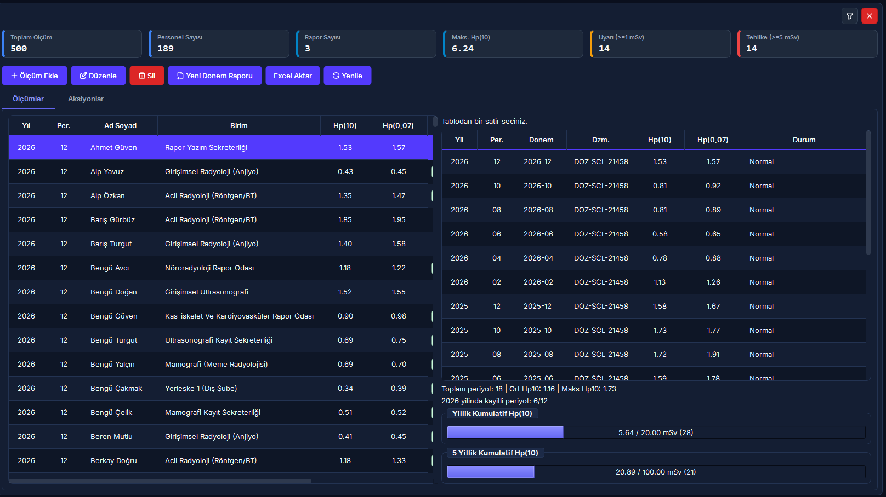
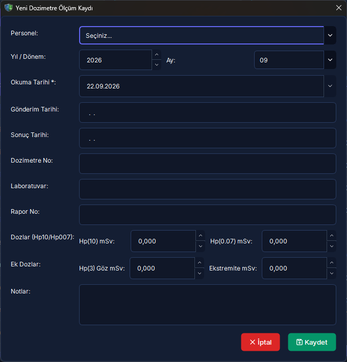
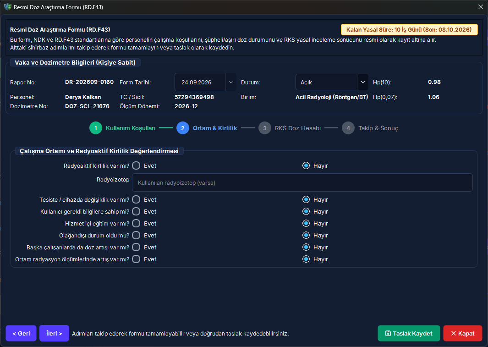
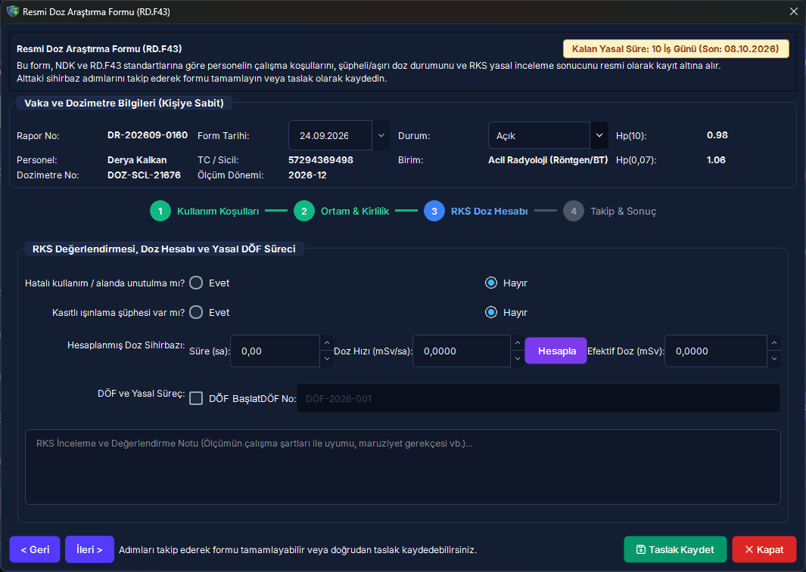
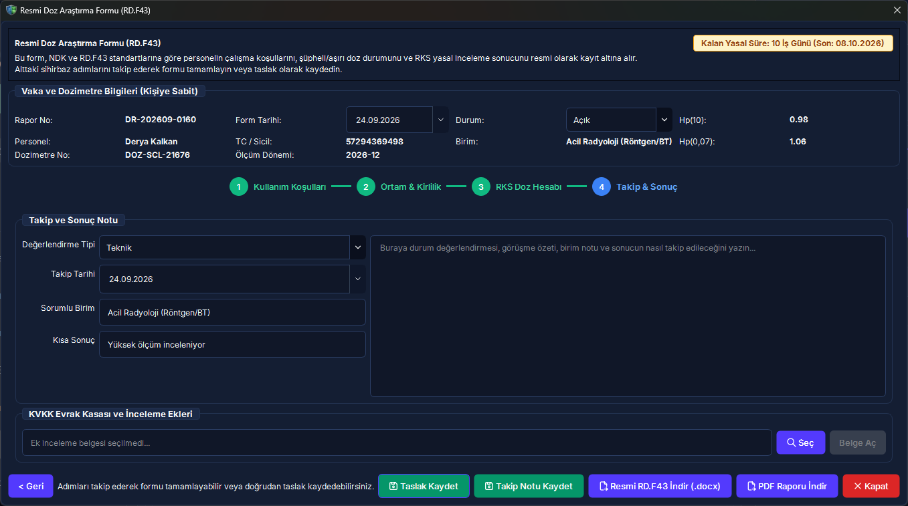

Kişisel Dozimetre Takibi ve RD.F43 Doz Aşımı Araştırması
Radyasyon çalışanlarının kişisel dozimetre ölçümlerini (TENMAK, RADAT ve Excel raporlarından aktarım, kalıcı eşleştirme hafızası), 2,0 mSv inceleme eşiği ve 20 / 50 mSv NDK yasal limit kontrollerini, çalışan beyanıyla bağlantılı 3 adımlı RD.F43 Doz Araştırma Formunu ve RKS net maruziyet değerlendirmesini yönetmenizi sağlar.
Kısa Reçete: Dozimetre Aktarımı, Eşik Alarmı ve RD.F43 Araştırması
Laboratuvardan gelen periyodik doz sonuçlarının doğru personellere işlenmesi, eşik aşımlarının yakalanması ve 10 iş günü içinde resmi RD.F43 dosyasının kapatılması.
[Yeni Donem Raporu] ile TENMAK, RADAT veya Excel dosyasını aktarın; Aksiyonlar sekmesinden [İnceleme Başlat] ile çalışan beyanı isteyin; beyan geldikten sonra [Doz Araştırma Formu (RD.F43)] üzerinden incelemeyi tamamlayıp [Aksiyonu Kapat] ile mühürleyin.
İsim ve T.C. bazlı kalıcı eşleştirme hafızası sonraki aylarda eşleşmeleri otomatik tanır; 2,0 mSv ve 5,0 mSv eşiklerinde anlık uyarı üretilir; çalışan beyanı ile RKS değerlendirmesi tamamlanmadan dosya kapanmaz.
5N1K Kural ve Arayüz Çözümleme Tablosu
Laboratuvar içe aktarımı, eşik denetimi, birim rotasyonu izleme, çalışan beyanı kilidi ve 3 adımlı RD.F43 araştırma kuralları.
Kritik Sahada Yanlış Bilinen Kurallar (Mit Avcısı)
Süreç Akış Şeması
Yıllık / Gebe Sınırı?"} B -->|Normal < 2,0 mSv| C["Rutin Kümülatif Doz Kaydı"] B -->|Aşım / Anomali| D["10 İş Günü Geri Sayım & Alarm"] end subgraph S2 ["2. AŞAMA: ÇİFT YÖNLÜ BEYAN VE RD.F43"] direction LR E["İnceleme Başlat: Web Portal Görevi"] --> F["Adım 1: Çalışan Beyanı (Sayfa 1)"] F --> G["Adım 2: RKS Saha İncelemesi (Sayfa 2)"] G --> H["Adım 3: Akıllı Teşhis, Doz Hesabı & DÖF"] end subgraph S3 ["3. AŞAMA: KARAR, RESMİ EVRAK VE KAPATMA"] direction LR I{"Gerçek Mesleki Aşım
veya Limit Üstü mü?"} -->|Artefakt / Unutulma| J["Net Mesleki Doz Düzeltilir"] I -->|Gerçek / Limit Aşımı| K["DÖF & Radyasyon Alanı Blokajı"] J & K --> L(["Resmi RD.F43 PDF/Word & Aksiyonu Kapat"]) end D ==> E H ==> I
- Ölçüm Aktarımı ve Eşik Denetimi: Laboratuvar raporu veya tekil ölçüm işlenir; 2,0 mSv inceleme düzeyi, 5,0 mSv müdahale düzeyi veya yıllık/gebe limitleri aşıldığında 10 iş günü sayacı ve alarm başlar.
- Çift Yönlü Beyan ve RD.F43: İnceleme başlatıldığında çalışan Web Portalından Sayfa 1 beyanını gönderir; ardından RKS saha incelemesini ve 3. adımdaki karar motoru analizini tamamlar.
- Karar ve Resmi Kapatma: Artefakt vakalarında net doz ayrıştırılır, gerçek aşımlarda DÖF ve gerekirse çalışma blokajı uygulanarak resmi Word/PDF RD.F43 tutanağıyla dosya mühürlenir.
Arayüz Ekran Görünümleri







Adım Adım İşlem Rehberi
1. Laboratuvar Dosyası İçe Aktarma ve Eşleşme Hafızasını Kullanma
- [Kişisel Dozimetre Takibi] ekranında araç çubuğundaki [Yeni Donem Raporu] butonuna tıklayın; format olarak Otomatik Algıla, RADAT, TENMAK / NDK veya Genel Excel / CSV seçip [Dosya Seç...] ile raporu yükleyin ve [İleri]'ye basın.
- Önizleme tablosunda eşleşmeyen satır varsa satıra çift tıklayarak (veya [Seçiliyi Personelle Eşle] ile) doğru çalışanı arayıp seçin; kalıcı hafıza onay kutusunu işaretleyerek [Bu Personelle Eşle]'ye basın (kurum dışı veya ayrılmış kişiler için [Eşleşmeyenleri Excel Olarak İndir] ile listeyi alabilirsiniz).
- Son adımda [Tamamla] butonuna basarak tüm ölçümleri kümülatife işleyin ve eşik aşımı varsa otomatik aksiyon kaydını oluşturun.
2. Manuel / EPD Ölçümü Ekleme ve Geçmiş Birim Rotasyonunu İzleme
- Münferit veya elektronik kişisel dozimetre (EPD) sonucu girmek için [Ölçüm Ekle] butonuna tıklayın; personeli, dozimetre tipini (Tüm Vücut, Yüzük, Göz Lensi, EPD) ve derin/yüzey dozlarını girip [Kaydet]'e basın (2,0 mSv aşımında sistem anında uyarı verir).
- Ölçümler tablosunda herhangi bir satıra tıkladığınızda sağ panelde personelin geçmiş ölçümleri o dönemde görev yaptığı klinik birim bilgisiyle birlikte görüntülenir.
3. Çalışan Beyanı ve 3 Adımlı RD.F43 Araştırmasını Tamamlama (Masaüstü ve Web)
- Aksiyonlar sekmesinde inceleme bekleyen kaydı seçip [İnceleme Başlat] butonuna tıklayın; ilgili personelin Web Portalı görev ekranına Sayfa 1 beyan bildirimi otomatik iletilir ve durum BEYAN BEKLİYOR olur.
- Personel Web Portalından kendi çalışma rejimi, dozimetre takış konumu ve olay beyanı sorularını yanıtladığında masaüstü bildirim çekmecesine uyarı düşer; bu sırada RKS isterse [Takip Ölçümü Planla] ve [Birim Notu Ekle] ile ek izleme kaydı açabilir.
- RKS, [Doz Araştırma Formu (RD.F43)] butonuna basarak 3 adımlı sihirbazda Sayfa 1 yanıtlarını doğrular, Sayfa 2 saha sorularını doldurur ve 3. adımda gerekirse [Hesapla] ile teorik dozu hesaplar; [Önerilen Kararı ve Bulguları Forma Aktar] butonuna tıklayıp gerekirse [DÖF Kaydı Aç / Yönet] üzerinden DÖF bağlayarak [PDF Raporu İndir] / Word çıktısı alır ve [Aksiyonu Kapat] butonuna basar (sonradan düzeltme gerekirse rapor penceresinden [Düzeltme Yap / Formu Yeniden Aç] kullanılır).
- Web Portalı Kişisel Doz Karnesi: Çalışanlar ve yöneticiler tarayıcıdan 20 / 50 mSv limitlerine olan mesafeyi gösteren radyal göstergeyi, 12 aylık doz trendini ve kendi ölçüm geçmişlerini anlık izleyebilir.
Sıkça Sorulan Sorular (SSS)
Dozimetre raporu aktarırken bazı personeller eşleşmezse sonraki aylarda tekrar mı seçmem gerekir?
Hayır. Eşleşmeyen satıra çift tıklayıp açılan personel seçim penceresinde eşleştirmeyi hafızaya kaydet kutusunu işaretlediğinizde, sistem sağlayıcı yazımı ile personeli kalıcı olarak eşleştirir ve sonraki dönemlerde otomatik tanır. Kurum personeli olmayan satırlar ise [Eşleşmeyenleri Excel Olarak İndir] ile dışa aktarılabilir.
TENMAK veya RADAT dışında farklı bir dozimetri laboratuvarıyla çalışıyorsak nasıl aktarabiliriz?
Raporu standart Excel sütunlarına göre düzenleyip Genel Excel / CSV seçeneğiyle aktarabilirsiniz. Laboratuvarınızın özgün rapor formatını doğrudan tanıtmak isterseniz örnek bir dosyayı destek ekibiyle paylaşmanız yeterlidir.
Kaydedilmiş bir dozimetri ölçümü yanlışsa neden doğrudan silinip yok edilemiyor?
NDK mevzuatı ve denetim izi bütünlüğü gereğince resmi doz kayıtları iz bırakmadan değiştirilemez. Düzeltme gerektiğinde tutanak veya kayıt üzerindeki gerekçeli düzeltme mekanizması kullanılır ve değişiklik denetim izine işlenir.
10 iş günü yasal geri sayım rozeti kırmızıya dönerse sistem işlem engeli koyar mı?
Sistem doğrudan teknik çalışma kilidi koymaz; ancak NDK açısından 10 iş günü aşımı kritik gecikme sayıldığı için RKS panosunda yüksek öncelikli alarm üretilir ve denetim izinde gecikme kaydı tutulur.